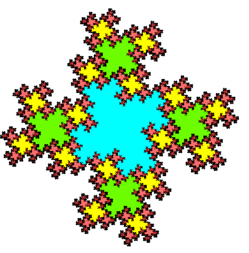

Escher and the Infinite, with Fractals
| So far, these fractal tiles are just square or hexagonal (Gosper tiles) tessellations with the boundaries of the tiles modified to be fractals. | |||
| While there is infinite detail in a fractal curve, seeing this is subtle and could hardly satisfy Escher's interest in representing infinity within a bounded region. | |||
|
|||
| If we do this carefully, we can create cascades of smaller copies, accumulating not just along the limiting circle, as in Escher's Cricle Limit images, but in infinitely many pockets scattered thhroughout the tile. | |||
| For example, take the tile constructed in our method 1 example. Subdivide this into five congruent tiles. Paint the middle blue and leave it unchanged. | |||
| Next, subdivide each of the remaining four tiles into five pieces. Paint the middle green and leave them unchanged. | |||
| Subdivide the each of the remaining 16 subtiles into five pieces. Paint the middle yellow and leave them unchanged. | |||
| Continuing in this way, we produce a cascade of tiles within tiles within tiles, thoroughly mixed around the other tiles. | |||
|  | |||
| Imagine these tiles as starfish, for example, and think of what Escher could have done with this pattern. |
Return to Method 2.